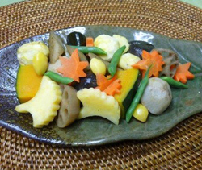

秋野菜の炊き合わせ
- 調理時間：30 分
- （一人当たり）
- カロリー：335kcal
- たんぱく質：7.2g
- 脂質：0.9g
- 塩分：3.6g


＜２人分＞
- 里芋
- 100g
- ニンジン
- 50g
- レンコン
- 50g
- ごぼう
- 1/2本
- 昆布
- 適宜
- ギンナン（ゆで）
- 1/2パック
- カボチャ
- 100g
- サヤインゲン
- 2～3本
- むき栗
- 4粒
- さつまいも
- 100g
- Ａ
- ・だし汁
- 400～500cc
- ・薄口醤油
- 大さじ2
- ・みりん
- 大さじ2
- ・酒
- 大さじ1
- ・塩
- 少々


- 里芋は皮をむいて塩でもみ洗いをしてぬめりをとる。
ニンジン、レンコン、ゴボウは乱切り、昆布は結び昆布にする。
カボチャは食べやすい大きさに切る。 - 斜め切りにしたサヤインゲン、むき栗、型でぬいたサツマイモは、各々塩ゆでする。
- 鍋にＡを合わせ、カボチャ以外の①の材料を加え、中火で煮込む。材料が８割がた煮えたら、カボチャを加える。
カボチャがやわらかく煮えたら火を止める。 - 器に盛り付け、②のサツマイモ、栗、サヤインゲンも添える。
秋野菜の炊き合わせ
夕暮れは早く、空にはイワシ雲。季節はいつの間にか秋へと移り変わりました。
実りの秋は、土のエネルギーを充分に蓄えた根菜が旬をむかえます。根菜は、ビタミン、ミネラルの宝庫です。体を温め、滋養強壮効果がある陽性食材ともいわれています。その上、豊富な食物繊維は腸の掃除をして、便秘予防にもおすすめ。
歯ごたえのある根菜は、自然と噛む動作につながる食材が多いことも特徴です。咀嚼することで唾液の分泌量が増え、消化吸収も助けますので一石二鳥。子どもたちには少し大きめにカットすることでさらに咀嚼を促しますが、高齢者には小さめにカットして食べやすい工夫をしましょう。